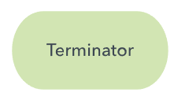
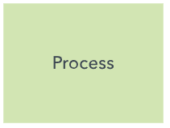
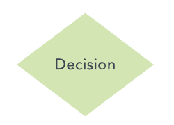
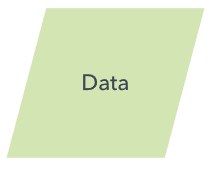
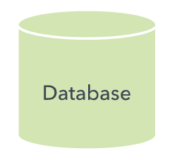
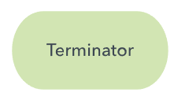
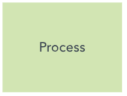
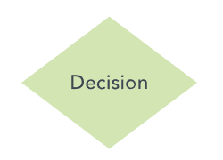
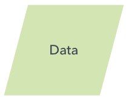
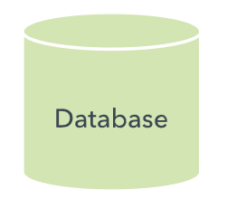

Process:

Decision:

Document:
Data, or Input/Output:

Stored data:

Flow Arrow:

Comment or Annotation:

Predefined Process:

On-page connector/reference:

Off-page connector/reference:

Vooskeem on diagramm, mis kujutab protsessi, süsteemi või arvutialgoritmi. Neid kasutatakse laialdaselt erinevates valdkondades, et dokumenteerida,
analüüsida, planeerida, täiustada ja selgelt kommunikeerida sageli keerukaid protsesse. Vooskeemid kasutavad samme tähistavaid kujundeid (nt ristkülikud,
ovaalid, teemandid) ning nooli, mis näitavad voogu ja järjekorda. Need võivad olla lihtsad käsitsi joonistatud skeemid või keerukad arvutigraafikaga diagrammid.
Vooskeeme kasutavad nii tehnilised kui ka mittetehnilised inimesed, ja neid tuntakse ka eripärasema nime all, näiteks protsessivooskeem, protsessikaart,
funktsionaalne vooskeem, äriprotsesside kaardistamine või BPMN. Nad on seotud ka teiste diagrammitüüpidega, nagu andmevoodiagrammid (DFD) ja UML-i tegevusdiagrammid.
Vooludiagrammid on andmevoo visuaalseks kujutamiseks kasulikud nii programmi või algoritmi kirjutamisel kui ka selle selgitamisel või koostöös töötamisel.
Algoritmi vooludiagrammi abil saab enne kodeerimise alustamist kirjeldada programmi loogikat, aidates mõelda terviklikult ja pakkudes juhist kodeerimisel.
Konkreetsemalt aitavad vooludiagrammid:
Terminal/Terminator:

Process:

Decision:

Document:
Data, or Input/Output:

Stored data:

Flow Arrow:
Comment or Annotation:
Predefined Process:
On-page connector/reference:
Off-page connector/reference:
Bitcoin kalkulaatori vooskeem
Allikad:
Lucidchart